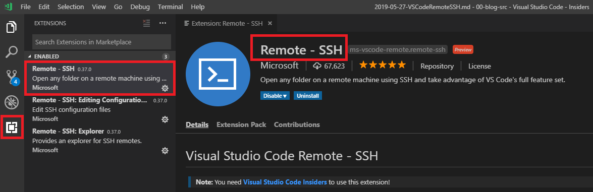
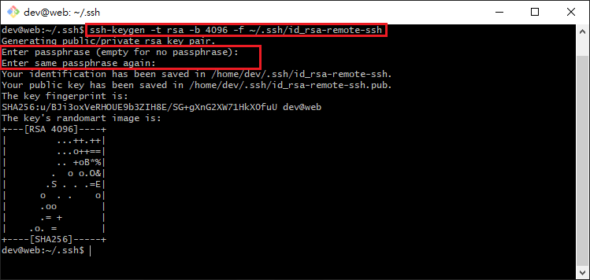
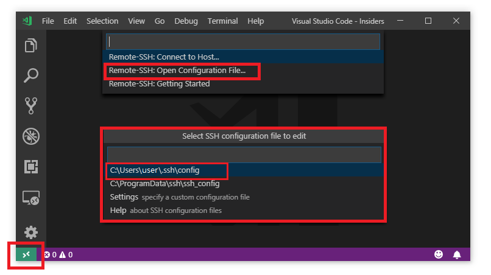
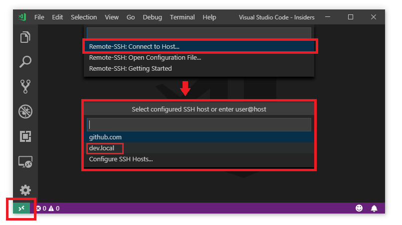
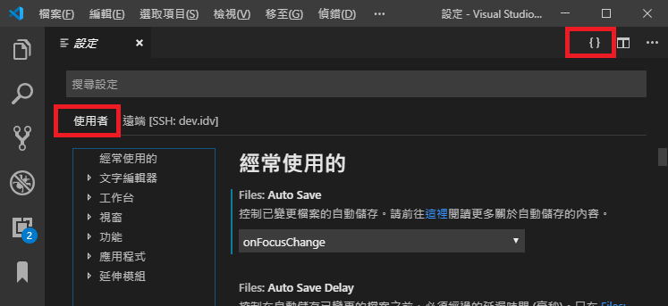

<!DOCTYPE html>
<html>
<head><meta name="generator" content="Hexo 3.8.0">
  <meta charset="utf-8">
  
  <title>VS Code遠端開發套件：Remote-SSH | Mars&#39;s Blog</title>
  <meta name="viewport" content="width=device-width, initial-scale=1, maximum-scale=1">
  <meta name="description" content="一、說明使用VS Codey套件Remote-SSH實現遠端開發 二、安裝 下載並安裝VS Code  安裝VS Code套件Remote - SSH  建立SSH Key打開git bash，輸入下列指令 1$ ssh-keygen -t rsa -b 4096 -f ~/.ssh/id_rsa-remote-ssh    產生ssh key時，如果有設定密碼，以後使用此ssh key時都要輸入">
<meta name="keywords" content="dev,coding,tools,ide,vscode">
<meta property="og:type" content="article">
<meta property="og:title" content="VS Code遠端開發套件：Remote-SSH">
<meta property="og:url" content="https://blog.mars-world.net/2019/05/27/vscode-remote-ssh/index.html">
<meta property="og:site_name" content="Mars&#39;s Blog">
<meta property="og:description" content="一、說明使用VS Codey套件Remote-SSH實現遠端開發 二、安裝 下載並安裝VS Code  安裝VS Code套件Remote - SSH  建立SSH Key打開git bash，輸入下列指令 1$ ssh-keygen -t rsa -b 4096 -f ~/.ssh/id_rsa-remote-ssh    產生ssh key時，如果有設定密碼，以後使用此ssh key時都要輸入">
<meta property="og:locale" content="default">
<meta property="og:image" content="https://blog.mars-world.net/2019/05/27/vscode-remote-ssh/install-remote-ssh.png">
<meta property="og:image" content="https://blog.mars-world.net/2019/05/27/vscode-remote-ssh/ssh-keygen.png">
<meta property="og:image" content="https://blog.mars-world.net/2019/05/27/vscode-remote-ssh/config-ssh.png">
<meta property="og:image" content="https://blog.mars-world.net/2019/05/27/vscode-remote-ssh/connect-to-remote.png">
<meta property="og:image" content="https://blog.mars-world.net/2019/05/27/vscode-remote-ssh/set-config.png">
<meta property="og:updated_time" content="2019-10-24T15:54:27.433Z">
<meta name="twitter:card" content="summary">
<meta name="twitter:title" content="VS Code遠端開發套件：Remote-SSH">
<meta name="twitter:description" content="一、說明使用VS Codey套件Remote-SSH實現遠端開發 二、安裝 下載並安裝VS Code  安裝VS Code套件Remote - SSH  建立SSH Key打開git bash，輸入下列指令 1$ ssh-keygen -t rsa -b 4096 -f ~/.ssh/id_rsa-remote-ssh    產生ssh key時，如果有設定密碼，以後使用此ssh key時都要輸入">
<meta name="twitter:image" content="https://blog.mars-world.net/2019/05/27/vscode-remote-ssh/install-remote-ssh.png">
  
  
  
    <link href="//fonts.googleapis.com/css?family=Source+Code+Pro" rel="stylesheet" type="text/css">
  

  <link rel="stylesheet" href="https://maxcdn.bootstrapcdn.com/bootstrap/3.3.6/css/bootstrap.min.css" integrity="sha384-1q8mTJOASx8j1Au+a5WDVnPi2lkFfwwEAa8hDDdjZlpLegxhjVME1fgjWPGmkzs7" crossorigin="anonymous">

  <link rel="stylesheet" href="https://maxcdn.bootstrapcdn.com/font-awesome/4.5.0/css/font-awesome.min.css" integrity="sha384-XdYbMnZ/QjLh6iI4ogqCTaIjrFk87ip+ekIjefZch0Y+PvJ8CDYtEs1ipDmPorQ+" crossorigin="anonymous">

  <link rel="stylesheet" href="/css/styles.css">
  

</head>
</html>
<body>
  <nav class="navbar navbar-inverse">
  <div class="container">
    <!-- Brand and toggle get grouped for better mobile display -->
    <div class="navbar-header">
      <button type="button" class="navbar-toggle collapsed" data-toggle="collapse" data-target="#main-menu-navbar" aria-expanded="false">
        <span class="sr-only">Toggle navigation</span>
        <span class="icon-bar"></span>
        <span class="icon-bar"></span>
        <span class="icon-bar"></span>
      </button>
      
    </div>

    <!-- Collect the nav links, forms, and other content for toggling -->
    <div class="collapse navbar-collapse" id="main-menu-navbar">
      <ul class="nav navbar-nav">
        
          <li><a class href="/index.html">Home</a></li>
        
          <li><a class href="/archives/">Archives</a></li>
        
          <li><a class href="https://github.com/marshung24">GitHub</a></li>
        
      </ul>

      <!--
      <ul class="nav navbar-nav navbar-right">
        
      </ul>
      -->
    </div><!-- /.navbar-collapse -->
  </div><!-- /.container-fluid -->
</nav>

  <div class="container">
    <div class="blog-header">
  <h1 class="blog-title">Mars&#39;s Blog</h1>
  
    <p class="lead blog-description">Mars&#39;s learning record</p>
  
</div>

    <div class="row">
        <div class="col-sm-8 blog-main">
          <article id="post-vscode-remote-ssh" class="article article-type-post" itemscope itemprop="blogPost">

  <header class="article-header">
    
  
    <h1 class="article-title" itemprop="name">
      VS Code遠端開發套件：Remote-SSH
    </h1>
  


  </header>

  <div class="article-meta">
    <div class="article-datetime">
  <a href="/2019/05/27/vscode-remote-ssh/" class="article-date"><time datetime="2019-05-27T13:13:47.000Z" itemprop="datePublished">2019-05-27</time></a>
</div>

    <div class="article-author">Mars Hung, Gunter.Chou</div>
    
  <div class="article-category">
    <a class="article-category-link" href="/categories/tools/">tools</a>
  </div>


    <div class="article-reading">
  
  <span id="busuanzi_container_page_pv">文章閱讀量<span id="busuanzi_value_page_pv"></span>次</span>
  
</div>

  </div>
  <div class="article-inner">

    <div class="article-entry" itemprop="articleBody">
      
        
<div id="toc">
    <ol class="toc"><li class="toc-item toc-level-1"><a class="toc-link" href="#一、說明"><span class="toc-text">一、說明</span></a></li><li class="toc-item toc-level-1"><a class="toc-link" href="#二、安裝"><span class="toc-text">二、安裝</span></a></li><li class="toc-item toc-level-1"><a class="toc-link" href="#三、VS-Code環境設定"><span class="toc-text">三、VS Code環境設定</span></a><ol class="toc-child"><li class="toc-item toc-level-2"><a class="toc-link" href="#3-1-本地使用者-環境設定檔"><span class="toc-text">3.1 本地使用者 環境設定檔</span></a></li><li class="toc-item toc-level-2"><a class="toc-link" href="#3-2-遠端-環境設定檔"><span class="toc-text">3.2 遠端 環境設定檔</span></a></li></ol></li><li class="toc-item toc-level-1"><a class="toc-link" href="#四、常用快速鍵"><span class="toc-text">四、常用快速鍵</span></a></li><li class="toc-item toc-level-1"><a class="toc-link" href="#五、參考"><span class="toc-text">五、參考</span></a></li><li class="toc-item toc-level-1"><a class="toc-link" href="#六、Log"><span class="toc-text">六、Log</span></a></li></ol>
</div>

        <h1 id="一、說明"><a href="#一、說明" class="headerlink" title="一、說明"></a>一、說明</h1><p>使用VS Codey套件Remote-SSH實現遠端開發</p>
<h1 id="二、安裝"><a href="#二、安裝" class="headerlink" title="二、安裝"></a>二、安裝</h1><ol>
<li><p><a href="https://code.visualstudio.com/" target="_blank" rel="noopener">下載並安裝VS Code</a></p>
</li>
<li><p>安裝VS Code套件Remote - SSH<br></p>
</li>
<li><p>建立SSH Key<br>打開git bash，輸入下列指令</p>
<figure class="highlight plain"><table><tr><td class="gutter"><pre><span class="line">1</span><br></pre></td><td class="code"><pre><span class="line">$ ssh-keygen -t rsa -b 4096 -f ~/.ssh/id_rsa-remote-ssh</span><br></pre></td></tr></table></figure>
<p></p>
<blockquote>
<ul>
<li>產生ssh key時，如果有設定密碼，以後使用此ssh key時都要輸入密碼</li>
<li>在<strong>非共用電腦上</strong>使用的ssh key，密碼通常不設，自行保管好即可</li>
</ul>
</blockquote>
</li>
<li><p>設定SSH config<br>In VS Code, run Remote-SSH: Open Configuration File<br></p>
<figure class="highlight plain"><table><tr><td class="gutter"><pre><span class="line">1</span><br><span class="line">2</span><br><span class="line">3</span><br><span class="line">4</span><br><span class="line">5</span><br><span class="line">6</span><br></pre></td><td class="code"><pre><span class="line"># ~/.ssh/config</span><br><span class="line"></span><br><span class="line">Host &#123;dev.idv&#125;</span><br><span class="line">    User &#123;user_name&#125;</span><br><span class="line">    HostName &#123;dev.idv&#125;</span><br><span class="line">    IdentityFile ~/.ssh/id_rsa-remote-ssh</span><br></pre></td></tr></table></figure>
<blockquote>
<ul>
<li>將 <strong>{user_name}</strong> 替換成自己的帳號</li>
<li>Host {dev.idv} 中的 <strong>{dev.idv}</strong> 是伺服器的alias name (可以跟HostName不一樣)</li>
<li>HostName {dev.idv} 中的 <strong>{dev.idv}</strong> 是伺服器域名，也可以使用IP位址</li>
<li>IdentityFile 指定ssh私鑰路徑</li>
</ul>
</blockquote>
</li>
</ol>
<ol start="5">
<li><p>安裝SSH Key至遠端</p>
<figure class="highlight plain"><table><tr><td class="gutter"><pre><span class="line">1</span><br></pre></td><td class="code"><pre><span class="line">$ ssh-copy-id -i ~/.ssh/id_rsa-remote-ssh.pub &#123;user_name&#125;@&#123;dev.idv&#125;</span><br></pre></td></tr></table></figure>
</li>
<li><p>連線至遠端<br>In VS Code, run Remote-SSH: Connect to Host</p>
<blockquote>
<p>第一次連線會自動安裝遠端套件<br></p>
</blockquote>
</li>
</ol>
<blockquote>
<ul>
<li>VS Code 遠端開發說明<ul>
<li>VS Code IDE 編輯器安裝在本機電腦上，透過 Remote-SSH 套件使用SSH遠端連線協定連線到遠端Ubuntu(Linux)伺服器上編輯程式檔，此為遠端開發。</li>
</ul>
</li>
<li>SSH連線金鑰<ul>
<li>使用指令ssh-keygen建立SSH認証金鑰對id_rsa-remote-ssh, id_rsa-remote-ssh.pub</li>
<li>id_rsa-remote-ssh是私鑰，存放於本機端</li>
<li>id_rsa-remote-ssh.pub是公鑰，透過指令ssh-copy-id存放於遠端伺服器</li>
<li>設定config指定連線參數與使用金鑰檔</li>
<li>此時使用SSH連線到遠端伺服器時，就不需再輸入帳號密碼，所以需要妥善保管好SSH私鑰</li>
</ul>
</li>
</ul>
</blockquote>
<h1 id="三、VS-Code環境設定"><a href="#三、VS-Code環境設定" class="headerlink" title="三、VS Code環境設定"></a>三、VS Code環境設定</h1><h2 id="3-1-本地使用者-環境設定檔"><a href="#3-1-本地使用者-環境設定檔" class="headerlink" title="3.1 本地使用者 環境設定檔"></a>3.1 本地使用者 環境設定檔</h2><ul>
<li><p>按<code>[ctrl+,]</code>選使用者，再選右上角<strong>{}</strong>符號</p>
<p></p>
</li>
<li><p>貼上下列設定值後儲存(ctrl+s)</p>
</li>
</ul>
<figure class="highlight plain"><table><tr><td class="gutter"><pre><span class="line">1</span><br><span class="line">2</span><br><span class="line">3</span><br><span class="line">4</span><br><span class="line">5</span><br><span class="line">6</span><br><span class="line">7</span><br><span class="line">8</span><br><span class="line">9</span><br><span class="line">10</span><br><span class="line">11</span><br><span class="line">12</span><br><span class="line">13</span><br><span class="line">14</span><br><span class="line">15</span><br><span class="line">16</span><br><span class="line">17</span><br><span class="line">18</span><br><span class="line">19</span><br><span class="line">20</span><br><span class="line">21</span><br><span class="line">22</span><br><span class="line">23</span><br><span class="line">24</span><br><span class="line">25</span><br><span class="line">26</span><br><span class="line">27</span><br><span class="line">28</span><br><span class="line">29</span><br><span class="line">30</span><br><span class="line">31</span><br><span class="line">32</span><br><span class="line">33</span><br><span class="line">34</span><br><span class="line">35</span><br><span class="line">36</span><br><span class="line">37</span><br><span class="line">38</span><br><span class="line">39</span><br><span class="line">40</span><br><span class="line">41</span><br><span class="line">42</span><br><span class="line">43</span><br><span class="line">44</span><br><span class="line">45</span><br><span class="line">46</span><br><span class="line">47</span><br><span class="line">48</span><br><span class="line">49</span><br><span class="line">50</span><br><span class="line">51</span><br><span class="line">52</span><br><span class="line">53</span><br><span class="line">54</span><br><span class="line">55</span><br><span class="line">56</span><br><span class="line">57</span><br><span class="line">58</span><br><span class="line">59</span><br><span class="line">60</span><br><span class="line">61</span><br><span class="line">62</span><br><span class="line">63</span><br><span class="line">64</span><br><span class="line">65</span><br><span class="line">66</span><br><span class="line">67</span><br><span class="line">68</span><br><span class="line">69</span><br><span class="line">70</span><br><span class="line">71</span><br><span class="line">72</span><br><span class="line">73</span><br><span class="line">74</span><br><span class="line">75</span><br><span class="line">76</span><br><span class="line">77</span><br><span class="line">78</span><br><span class="line">79</span><br><span class="line">80</span><br><span class="line">81</span><br><span class="line">82</span><br><span class="line">83</span><br><span class="line">84</span><br><span class="line">85</span><br><span class="line">86</span><br><span class="line">87</span><br><span class="line">88</span><br><span class="line">89</span><br><span class="line">90</span><br><span class="line">91</span><br><span class="line">92</span><br><span class="line">93</span><br><span class="line">94</span><br><span class="line">95</span><br><span class="line">96</span><br><span class="line">97</span><br><span class="line">98</span><br><span class="line">99</span><br><span class="line">100</span><br><span class="line">101</span><br><span class="line">102</span><br><span class="line">103</span><br><span class="line">104</span><br><span class="line">105</span><br><span class="line">106</span><br><span class="line">107</span><br><span class="line">108</span><br><span class="line">109</span><br><span class="line">110</span><br><span class="line">111</span><br><span class="line">112</span><br><span class="line">113</span><br><span class="line">114</span><br><span class="line">115</span><br><span class="line">116</span><br><span class="line">117</span><br><span class="line">118</span><br><span class="line">119</span><br><span class="line">120</span><br><span class="line">121</span><br><span class="line">122</span><br><span class="line">123</span><br><span class="line">124</span><br><span class="line">125</span><br><span class="line">126</span><br><span class="line">127</span><br></pre></td><td class="code"><pre><span class="line">&#123;</span><br><span class="line">    &quot;extensions.autoUpdate&quot;: true,</span><br><span class="line">    &quot;update.enableWindowsBackgroundUpdates&quot;: false,</span><br><span class="line">    &quot;update.mode&quot;: &quot;manual&quot;,</span><br><span class="line"></span><br><span class="line">    &quot;remote.SSH.defaultExtensions&quot;: [</span><br><span class="line">        &quot;alefragnani.bookmarks&quot;,</span><br><span class="line">        &quot;berublan.vscode-log-viewer&quot;,</span><br><span class="line">        &quot;bmewburn.vscode-intelephense-client&quot;,</span><br><span class="line">        &quot;bysabi.prettier-vscode-standard&quot;,</span><br><span class="line">        &quot;eamodio.gitlens&quot;,</span><br><span class="line">        &quot;kokororin.vscode-phpfmt&quot;,</span><br><span class="line">        &quot;mhutchie.git-graph&quot;,</span><br><span class="line">        &quot;ms-ceintl.vscode-language-pack-zh-hant&quot;,</span><br><span class="line">        &quot;mutantdino.resourcemonitor&quot;,</span><br><span class="line">        &quot;neilbrayfield.php-docblocker&quot;,</span><br><span class="line">        &quot;rafamel.subtle-brackets&quot;,</span><br><span class="line">        &quot;small.php-ci&quot;,</span><br><span class="line">    ],</span><br><span class="line"></span><br><span class="line">    &quot;editor.fontSize&quot;: 16,</span><br><span class="line">    &quot;editor.wordSeparators&quot;: &quot;`~!@#%^&amp;*()=+-[&#123;]&#125;\\|;:&apos;\&quot;,.&lt;&gt;/?，。&quot;,</span><br><span class="line">    &quot;editor.renderControlCharacters&quot;: true,</span><br><span class="line">    &quot;editor.renderWhitespace&quot;: &quot;all&quot;,</span><br><span class="line">    &quot;editor.matchBrackets&quot;: false,</span><br><span class="line"></span><br><span class="line">    &quot;files.maxMemoryForLargeFilesMB&quot;: 5120,</span><br><span class="line">    &quot;files.autoSave&quot;: &quot;onFocusChange&quot;,</span><br><span class="line">    &quot;files.eol&quot;: &quot;\n&quot;,</span><br><span class="line">    &quot;files.watcherExclude&quot;: &#123;</span><br><span class="line">        &quot;**/bs&quot;: true,</span><br><span class="line">        &quot;**/ckeditor&quot;: true,</span><br><span class="line">        &quot;**/vendor/**&quot;: true,</span><br><span class="line">        &quot;**/outer/**&quot;: true,</span><br><span class="line">    &#125;,</span><br><span class="line">    &quot;files.exclude&quot;: &#123;</span><br><span class="line">        &quot;**/.git&quot;: true,</span><br><span class="line">        &quot;**/.svn&quot;: true,</span><br><span class="line">        &quot;**/.hg&quot;: true,</span><br><span class="line">        &quot;**/CVS&quot;: true,</span><br><span class="line">        &quot;**/.DS_Store&quot;: true,</span><br><span class="line">        &quot;**/uploads&quot;: true,</span><br><span class="line">        &quot;**/tmp&quot;: true,</span><br><span class="line">    &#125;,</span><br><span class="line"></span><br><span class="line">    &quot;breadcrumbs.enabled&quot;: true,</span><br><span class="line">    &quot;diffEditor.ignoreTrimWhitespace&quot;: false,</span><br><span class="line">    &quot;window.zoomLevel&quot;: 0,</span><br><span class="line"></span><br><span class="line">    &quot;typescript.npm&quot;: &quot;‪C:/Program Files/nodejs/npm.cmd&quot;,</span><br><span class="line">    &quot;typescript.preferences.quoteStyle&quot;: &quot;single&quot;,</span><br><span class="line">    &quot;javascript.implicitProjectConfig.checkJs&quot;: true,</span><br><span class="line">    &quot;javascript.preferences.quoteStyle&quot;: &quot;single&quot;,</span><br><span class="line">    &quot;javascript.referencesCodeLens.enabled&quot;: true,</span><br><span class="line">    &quot;javascript.format.insertSpaceBeforeFunctionParenthesis&quot;: true,</span><br><span class="line">    &quot;javascript.format.insertSpaceAfterOpeningAndBeforeClosingNonemptyParenthesis&quot;: true,</span><br><span class="line"></span><br><span class="line">    &quot;[php]&quot;: &#123;</span><br><span class="line">        &quot;editor.defaultFormatter&quot;: &quot;bmewburn.vscode-intelephense-client&quot;</span><br><span class="line">    &#125;,</span><br><span class="line">    &quot;[javascript]&quot;: &#123;</span><br><span class="line">        &quot;editor.defaultFormatter&quot;: &quot;bysabi.prettier-vscode-standard&quot;</span><br><span class="line">    &#125;,</span><br><span class="line"></span><br><span class="line">    &quot;git.confirmSync&quot;: false,</span><br><span class="line">    &quot;gitlens.views.lineHistory.enabled&quot;: false,</span><br><span class="line">    &quot;gitlens.hovers.annotations.over&quot;: &quot;annotation&quot;,</span><br><span class="line">    &quot;gitlens.advanced.fileHistoryFollowsRenames&quot;: false,</span><br><span class="line">    &quot;gitlens.advanced.similarityThreshold&quot;: 50,</span><br><span class="line">    &quot;gitlens.codeLens.scopes&quot;: [</span><br><span class="line">        &quot;document&quot;</span><br><span class="line">    ],</span><br><span class="line">    &quot;gitlens.advanced.messages&quot;: &#123;</span><br><span class="line">        &quot;suppressCommitHasNoPreviousCommitWarning&quot;: true,</span><br><span class="line">        &quot;suppressShowKeyBindingsNotice&quot;: true</span><br><span class="line">    &#125;,</span><br><span class="line">    &quot;gitlens.blame.highlight.locations&quot;: [</span><br><span class="line">        &quot;gutter&quot;,</span><br><span class="line">        &quot;line&quot;,</span><br><span class="line">        &quot;overview&quot;</span><br><span class="line">    ],</span><br><span class="line"></span><br><span class="line">    &quot;subtleBrackets.style&quot;: &#123;</span><br><span class="line">        &quot;color&quot;: &quot;#528BFF&quot;,</span><br><span class="line">        &quot;borderWidth&quot;: &quot;1px&quot;,</span><br><span class="line">        &quot;borderStyle&quot;: &quot;none none solid none&quot;</span><br><span class="line">    &#125;,</span><br><span class="line"></span><br><span class="line">    &quot;phpfmt.smart_linebreak_after_curly&quot;: true,</span><br><span class="line">    &quot;phpfmt.passes&quot;: [</span><br><span class="line">        &quot;GeneratePHPDoc&quot;,</span><br><span class="line">        &quot;PHPDocTypesToFunctionTypehint&quot;,</span><br><span class="line">        &quot;PrettyPrintDocBlocks&quot;,</span><br><span class="line">        &quot;ReindentSwitchBlocks&quot;,</span><br><span class="line">        &quot;DocBlockToComment&quot;,</span><br><span class="line">        &quot;EliminateDuplicatedEmptyLines&quot;,</span><br><span class="line">        &quot;PSR2EmptyFunction&quot;,</span><br><span class="line">        &quot;AlignPHPCode&quot;,</span><br><span class="line">        &quot;RTrim&quot;,</span><br><span class="line">        &quot;IndentTernaryConditions&quot;,</span><br><span class="line">        &quot;MergeElseIf&quot;,</span><br><span class="line">    ],</span><br><span class="line"></span><br><span class="line">    &quot;intelephense.completion.fullyQualifyGlobalConstantsAndFunctions&quot;: true,</span><br><span class="line">    &quot;intelephense.files.maxSize&quot;: 5242880,</span><br><span class="line">    &quot;intelephense.files.exclude&quot;: [</span><br><span class="line">        &quot;**/.git/**&quot;,</span><br><span class="line">        &quot;**/.svn/**&quot;,</span><br><span class="line">        &quot;**/.hg/**&quot;,</span><br><span class="line">        &quot;**/CVS/**&quot;,</span><br><span class="line">        &quot;**/.DS_Store/**&quot;,</span><br><span class="line">        &quot;**/node_modules/**&quot;,</span><br><span class="line">        &quot;**/bower_components/**&quot;,</span><br><span class="line">        &quot;**/vendor/**/&#123;Test,test,Tests,tests&#125;/**&quot;,</span><br><span class="line">        &quot;**/outer/**&quot;,</span><br><span class="line">    ],</span><br><span class="line"></span><br><span class="line">    &quot;prettier.singleQuote&quot;: true,</span><br><span class="line">    &quot;prettier.parser&quot;: &quot;flow&quot;,</span><br><span class="line">    &quot;prettier.trailingComma&quot;: &quot;es5&quot;,</span><br><span class="line">    &quot;prettier.printWidth&quot;: 100,</span><br><span class="line"></span><br><span class="line">    &quot;terminal.integrated.shell.windows&quot;: &quot;C:\\Program Files\\Git\\bin\\bash.exe&quot;,</span><br><span class="line">    &quot;terminal.integrated.env.windows&quot;: &#123;&quot;LC_ALL&quot;:&quot;en_US.UTF-8&quot;&#125;,</span><br><span class="line">    &quot;explorer.confirmDelete&quot;: false,</span><br><span class="line">    &quot;terminal.external.windowsExec&quot;: &quot;C:\\Program Files\\Git\\git-bash.exe&quot;,</span><br><span class="line">&#125;</span><br></pre></td></tr></table></figure>
<blockquote>
<p>Gunter.Chou提供</p>
</blockquote>
<h2 id="3-2-遠端-環境設定檔"><a href="#3-2-遠端-環境設定檔" class="headerlink" title="3.2 遠端 環境設定檔"></a>3.2 遠端 環境設定檔</h2><ul>
<li>按<code>[ctrl+,]</code>選遠端[SSH:XXXX]，再選右上角<strong>{}</strong>符號</li>
<li>貼上下列設定值後儲存(ctrl+s)</li>
</ul>
<figure class="highlight plain"><table><tr><td class="gutter"><pre><span class="line">1</span><br><span class="line">2</span><br><span class="line">3</span><br><span class="line">4</span><br><span class="line">5</span><br><span class="line">6</span><br><span class="line">7</span><br><span class="line">8</span><br><span class="line">9</span><br><span class="line">10</span><br><span class="line">11</span><br><span class="line">12</span><br><span class="line">13</span><br><span class="line">14</span><br><span class="line">15</span><br><span class="line">16</span><br></pre></td><td class="code"><pre><span class="line">&#123;</span><br><span class="line">    &quot;php.validate.executablePath&quot;: &quot;/usr/bin/php7.0&quot;,</span><br><span class="line">    &quot;typescript.npm&quot;: &quot;/usr/local/bin/npm&quot;,</span><br><span class="line">    &quot;CI.other&quot;: [</span><br><span class="line">        &quot;system/core/Common.php&quot;,</span><br><span class="line">        &quot;system/database/DB_query_builder.php&quot;,</span><br><span class="line">        &quot;application/models/My_model.php&quot;,</span><br><span class="line">    ],</span><br><span class="line">    &quot;resmon.show.battery&quot;: false,</span><br><span class="line">    &quot;logViewer.watch&quot;: [</span><br><span class="line">        &#123;</span><br><span class="line">            &quot;title&quot;: &quot;CI Log&quot;,</span><br><span class="line">            &quot;pattern&quot;: &quot;./application/logs/*.php&quot;</span><br><span class="line">        &#125;,</span><br><span class="line">    ],</span><br><span class="line">&#125;</span><br></pre></td></tr></table></figure>
<blockquote>
<p>Gunter.Chou提供</p>
</blockquote>
<h1 id="四、常用快速鍵"><a href="#四、常用快速鍵" class="headerlink" title="四、常用快速鍵"></a>四、常用快速鍵</h1><ul>
<li>開啟工作資料夾： ctrl+k ctrl+o (雙組合鍵)</li>
<li>切換工作資料夾： ctrl+r (已開過間切換)</li>
<li>呼叫/關閉終端機： ctrl+`</li>
<li>打開/關閉檔案總管： ctrl+b</li>
<li>程式碼格式化： alt+shift+f</li>
<li>專案內檔案尋找： ctrl+p</li>
<li>整列註解切換： ctrl+/</li>
<li>成對括號尋找： ctrl+shift+\</li>
<li>增加選取列縮排： ctrl+]</li>
<li>減少選取列縮排： ctrl+[]</li>
<li>刪除整列： ctrl+shift+k</li>
<li>複制： ctrl+c</li>
<li>剪下： ctrl+x</li>
<li>還原： ctrl+z</li>
<li>重做： ctrl+y</li>
<li>搜尋： ctrl+f</li>
<li>取代： ctrl+h</li>
<li>行數跳躍： ctrl+g</li>
<li>分割視窗： ctrl+\</li>
<li>選取同一段字詞： ctrl+d</li>
</ul>
<h1 id="五、參考"><a href="#五、參考" class="headerlink" title="五、參考"></a>五、參考</h1><ul>
<li><a href="https://marketplace.visualstudio.com/items?itemName=ms-vscode-remote.remote-ssh" target="_blank" rel="noopener">Remote - SSH</a></li>
<li><a href="https://code.visualstudio.com/docs/remote/ssh#_getting-started" target="_blank" rel="noopener">Remote Development using SSH</a></li>
<li><a href="https://code.visualstudio.com/docs/remote/troubleshooting#_installing-a-supported-ssh-client" target="_blank" rel="noopener">Remote Development Tips and Tricks</a></li>
</ul>
<h1 id="六、Log"><a href="#六、Log" class="headerlink" title="六、Log"></a>六、Log</h1><ul>
<li>2019-05-27 Mars Hung編輯</li>
<li>2019-07-03 加入Gunter Chou提供環境設定</li>
<li>2019-07-24 加入Gunter Chou提供環境設定</li>
</ul>

      
    </div>

    
      

    

    <footer class="article-footer">
      <a data-url="https://blog.mars-world.net/2019/05/27/vscode-remote-ssh/" data-id="ck7208qyr004upgufhp8t6h9j" class="article-share-link">
        <i class="fa fa-share"></i> Share
      </a>
      
      
  <ul class="article-tag-list"><li class="article-tag-list-item"><a class="article-tag-list-link" href="/tags/coding/">coding</a></li><li class="article-tag-list-item"><a class="article-tag-list-link" href="/tags/dev/">dev</a></li><li class="article-tag-list-item"><a class="article-tag-list-link" href="/tags/ide/">ide</a></li><li class="article-tag-list-item"><a class="article-tag-list-link" href="/tags/tools/">tools</a></li><li class="article-tag-list-item"><a class="article-tag-list-link" href="/tags/vscode/">vscode</a></li></ul>


    </footer>
  </div>
  
    
<ul id="article-nav" class="nav nav-pills nav-justified">
  
  <li role="presentation">
    <a href="/2019/05/03/coding-style-standard/" id="article-nav-older" class="article-nav-link-wrap">
      <i class="fa fa-chevron-left pull-left"></i>
      <span class="article-nav-link-title">程式碼寫作風格標準-CodeStyle</span>
    </a>
  </li>
  
  
  <li role="presentation">
    <a href="/2019/05/30/nodejs-install/" id="article-nav-newer" class="article-nav-link-wrap">
      <span class="article-nav-link-title">Node.js安裝</span>
      <i class="fa fa-chevron-right pull-right"></i>
    </a>
  </li>
  
</ul>


  
</article>


        </div>
        <div class="col-sm-3 col-sm-offset-1 blog-sidebar">
          
  
  <div class="sidebar-module">
    <h4>Recents</h4>
    <ul class="sidebar-module-list">
      
        <li>
          <a href="/2019/12/07/git-learning/">Git常用指令學習</a>
        </li>
      
        <li>
          <a href="/2019/11/14/web-server-xampp-install/">Web伺服器安裝(XAMPP)-Windows</a>
        </li>
      
        <li>
          <a href="/2019/08/18/crud-design-04/">CRUD表單設計 Day-04 Javascript</a>
        </li>
      
        <li>
          <a href="/2019/08/17/crud-design-03/">CRUD表單設計 Day-03 安裝Bootstrap4</a>
        </li>
      
        <li>
          <a href="/2019/08/16/php-training/">PHP培訓-CRUD</a>
        </li>
      
    </ul>
  </div>


  
  <div class="sidebar-module">
    <h4>Archives</h4>
    <ul class="sidebar-module-list"><li class="sidebar-module-list-item"><a class="sidebar-module-list-link" href="/archives/2019/12/">December 2019</a><span class="sidebar-module-list-count">1</span></li><li class="sidebar-module-list-item"><a class="sidebar-module-list-link" href="/archives/2019/11/">November 2019</a><span class="sidebar-module-list-count">1</span></li><li class="sidebar-module-list-item"><a class="sidebar-module-list-link" href="/archives/2019/08/">August 2019</a><span class="sidebar-module-list-count">4</span></li><li class="sidebar-module-list-item"><a class="sidebar-module-list-link" href="/archives/2019/07/">July 2019</a><span class="sidebar-module-list-count">6</span></li><li class="sidebar-module-list-item"><a class="sidebar-module-list-link" href="/archives/2019/06/">June 2019</a><span class="sidebar-module-list-count">1</span></li><li class="sidebar-module-list-item"><a class="sidebar-module-list-link" href="/archives/2019/05/">May 2019</a><span class="sidebar-module-list-count">4</span></li><li class="sidebar-module-list-item"><a class="sidebar-module-list-link" href="/archives/2019/04/">April 2019</a><span class="sidebar-module-list-count">2</span></li><li class="sidebar-module-list-item"><a class="sidebar-module-list-link" href="/archives/2017/09/">September 2017</a><span class="sidebar-module-list-count">2</span></li></ul>
  </div>


  
  <div class="sidebar-module">
    <h4>Categories</h4>
    <ul class="sidebar-module-list"><li class="sidebar-module-list-item"><a class="sidebar-module-list-link" href="/categories/doc/">doc</a><span class="sidebar-module-list-count">2</span></li><li class="sidebar-module-list-item"><a class="sidebar-module-list-link" href="/categories/info/">info</a><span class="sidebar-module-list-count">3</span></li><li class="sidebar-module-list-item"><a class="sidebar-module-list-link" href="/categories/security/">security</a><span class="sidebar-module-list-count">1</span></li><li class="sidebar-module-list-item"><a class="sidebar-module-list-link" href="/categories/server/">server</a><span class="sidebar-module-list-count">2</span></li><li class="sidebar-module-list-item"><a class="sidebar-module-list-link" href="/categories/test/">test</a><span class="sidebar-module-list-count">1</span></li><li class="sidebar-module-list-item"><a class="sidebar-module-list-link" href="/categories/tools/">tools</a><span class="sidebar-module-list-count">6</span></li><li class="sidebar-module-list-item"><a class="sidebar-module-list-link" href="/categories/training/">training</a><span class="sidebar-module-list-count">5</span></li><li class="sidebar-module-list-item"><a class="sidebar-module-list-link" href="/categories/web/">web</a><span class="sidebar-module-list-count">1</span></li></ul>
  </div>


  
  <div class="sidebar-module">
    <h4>Tags</h4>
    <ul class="sidebar-module-list"><li class="sidebar-module-list-item"><a class="sidebar-module-list-link" href="/tags/account/">account</a><span class="sidebar-module-list-count">1</span></li><li class="sidebar-module-list-item"><a class="sidebar-module-list-link" href="/tags/ajax/">ajax</a><span class="sidebar-module-list-count">1</span></li><li class="sidebar-module-list-item"><a class="sidebar-module-list-link" href="/tags/apache/">apache</a><span class="sidebar-module-list-count">1</span></li><li class="sidebar-module-list-item"><a class="sidebar-module-list-link" href="/tags/blog/">blog</a><span class="sidebar-module-list-count">1</span></li><li class="sidebar-module-list-item"><a class="sidebar-module-list-link" href="/tags/bootstrap/">bootstrap</a><span class="sidebar-module-list-count">1</span></li><li class="sidebar-module-list-item"><a class="sidebar-module-list-link" href="/tags/codeingiter/">codeingiter</a><span class="sidebar-module-list-count">1</span></li><li class="sidebar-module-list-item"><a class="sidebar-module-list-link" href="/tags/coding/">coding</a><span class="sidebar-module-list-count">5</span></li><li class="sidebar-module-list-item"><a class="sidebar-module-list-link" href="/tags/composer/">composer</a><span class="sidebar-module-list-count">1</span></li><li class="sidebar-module-list-item"><a class="sidebar-module-list-link" href="/tags/debug/">debug</a><span class="sidebar-module-list-count">1</span></li><li class="sidebar-module-list-item"><a class="sidebar-module-list-link" href="/tags/dev/">dev</a><span class="sidebar-module-list-count">18</span></li><li class="sidebar-module-list-item"><a class="sidebar-module-list-link" href="/tags/doc/">doc</a><span class="sidebar-module-list-count">3</span></li><li class="sidebar-module-list-item"><a class="sidebar-module-list-link" href="/tags/env/">env</a><span class="sidebar-module-list-count">1</span></li><li class="sidebar-module-list-item"><a class="sidebar-module-list-link" href="/tags/git/">git</a><span class="sidebar-module-list-count">3</span></li><li class="sidebar-module-list-item"><a class="sidebar-module-list-link" href="/tags/github/">github</a><span class="sidebar-module-list-count">1</span></li><li class="sidebar-module-list-item"><a class="sidebar-module-list-link" href="/tags/hexo/">hexo</a><span class="sidebar-module-list-count">1</span></li><li class="sidebar-module-list-item"><a class="sidebar-module-list-link" href="/tags/ide/">ide</a><span class="sidebar-module-list-count">1</span></li><li class="sidebar-module-list-item"><a class="sidebar-module-list-link" href="/tags/info/">info</a><span class="sidebar-module-list-count">3</span></li><li class="sidebar-module-list-item"><a class="sidebar-module-list-link" href="/tags/javascript/">javascript</a><span class="sidebar-module-list-count">2</span></li><li class="sidebar-module-list-item"><a class="sidebar-module-list-link" href="/tags/jquery/">jquery</a><span class="sidebar-module-list-count">1</span></li><li class="sidebar-module-list-item"><a class="sidebar-module-list-link" href="/tags/linux/">linux</a><span class="sidebar-module-list-count">2</span></li><li class="sidebar-module-list-item"><a class="sidebar-module-list-link" href="/tags/mysql/">mysql</a><span class="sidebar-module-list-count">2</span></li><li class="sidebar-module-list-item"><a class="sidebar-module-list-link" href="/tags/nginx/">nginx</a><span class="sidebar-module-list-count">2</span></li><li class="sidebar-module-list-item"><a class="sidebar-module-list-link" href="/tags/nodejs/">nodejs</a><span class="sidebar-module-list-count">1</span></li><li class="sidebar-module-list-item"><a class="sidebar-module-list-link" href="/tags/php/">php</a><span class="sidebar-module-list-count">9</span></li><li class="sidebar-module-list-item"><a class="sidebar-module-list-link" href="/tags/phpunit/">phpunit</a><span class="sidebar-module-list-count">1</span></li><li class="sidebar-module-list-item"><a class="sidebar-module-list-link" href="/tags/sa/">sa</a><span class="sidebar-module-list-count">1</span></li><li class="sidebar-module-list-item"><a class="sidebar-module-list-link" href="/tags/sd/">sd</a><span class="sidebar-module-list-count">1</span></li><li class="sidebar-module-list-item"><a class="sidebar-module-list-link" href="/tags/security/">security</a><span class="sidebar-module-list-count">1</span></li><li class="sidebar-module-list-item"><a class="sidebar-module-list-link" href="/tags/server/">server</a><span class="sidebar-module-list-count">2</span></li><li class="sidebar-module-list-item"><a class="sidebar-module-list-link" href="/tags/setting/">setting</a><span class="sidebar-module-list-count">1</span></li><li class="sidebar-module-list-item"><a class="sidebar-module-list-link" href="/tags/sop/">sop</a><span class="sidebar-module-list-count">2</span></li><li class="sidebar-module-list-item"><a class="sidebar-module-list-link" href="/tags/standard/">standard</a><span class="sidebar-module-list-count">2</span></li><li class="sidebar-module-list-item"><a class="sidebar-module-list-link" href="/tags/style/">style</a><span class="sidebar-module-list-count">1</span></li><li class="sidebar-module-list-item"><a class="sidebar-module-list-link" href="/tags/test/">test</a><span class="sidebar-module-list-count">2</span></li><li class="sidebar-module-list-item"><a class="sidebar-module-list-link" href="/tags/tools/">tools</a><span class="sidebar-module-list-count">6</span></li><li class="sidebar-module-list-item"><a class="sidebar-module-list-link" href="/tags/trace/">trace</a><span class="sidebar-module-list-count">1</span></li><li class="sidebar-module-list-item"><a class="sidebar-module-list-link" href="/tags/training/">training</a><span class="sidebar-module-list-count">5</span></li><li class="sidebar-module-list-item"><a class="sidebar-module-list-link" href="/tags/unit-test/">unit test</a><span class="sidebar-module-list-count">1</span></li><li class="sidebar-module-list-item"><a class="sidebar-module-list-link" href="/tags/vscode/">vscode</a><span class="sidebar-module-list-count">1</span></li><li class="sidebar-module-list-item"><a class="sidebar-module-list-link" href="/tags/web/">web</a><span class="sidebar-module-list-count">8</span></li><li class="sidebar-module-list-item"><a class="sidebar-module-list-link" href="/tags/windows/">windows</a><span class="sidebar-module-list-count">1</span></li></ul>
  </div>


        </div>
    </div>
  </div>
  <footer class="blog-footer">
  <div class="container">
    <div id="footer-info" class="inner">
      &copy; 2020 Mars Hung Powered by <a href="http://hexo.io/" target="_blank">Hexo</a>
    </div>
  
  
    <script async src="//busuanzi.ibruce.info/busuanzi/2.3/busuanzi.pure.mini.js"></script>
    <span id="busuanzi_container_site_pv">總訪問量<span id="busuanzi_value_site_pv"></span>次</span>
    <span class="post-meta-divider">|</span>
    <span id="busuanzi_container_site_uv">訪客數<span id="busuanzi_value_site_uv"></span>人</span>
  
  </div>
</footer>

  

<script src="https://ajax.googleapis.com/ajax/libs/jquery/2.1.4/jquery.min.js" integrity="sha384-8gBf6Y4YYq7Jx97PIqmTwLPin4hxIzQw5aDmUg/DDhul9fFpbbLcLh3nTIIDJKhx" crossorigin="anonymous"></script>

<script src="https://maxcdn.bootstrapcdn.com/bootstrap/3.3.6/js/bootstrap.min.js" integrity="sha384-0mSbJDEHialfmuBBQP6A4Qrprq5OVfW37PRR3j5ELqxss1yVqOtnepnHVP9aJ7xS" crossorigin="anonymous"></script>


<script src="/js/script.js"></script>

</body>
</html>
